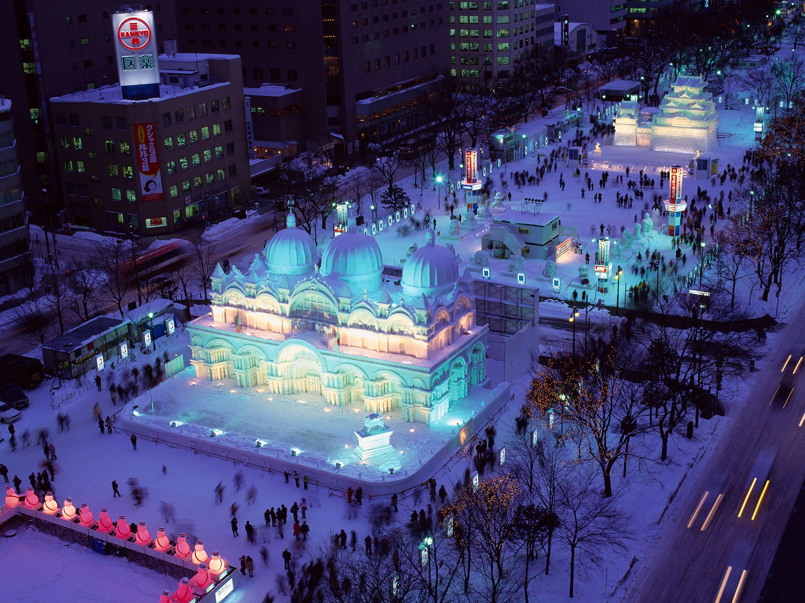
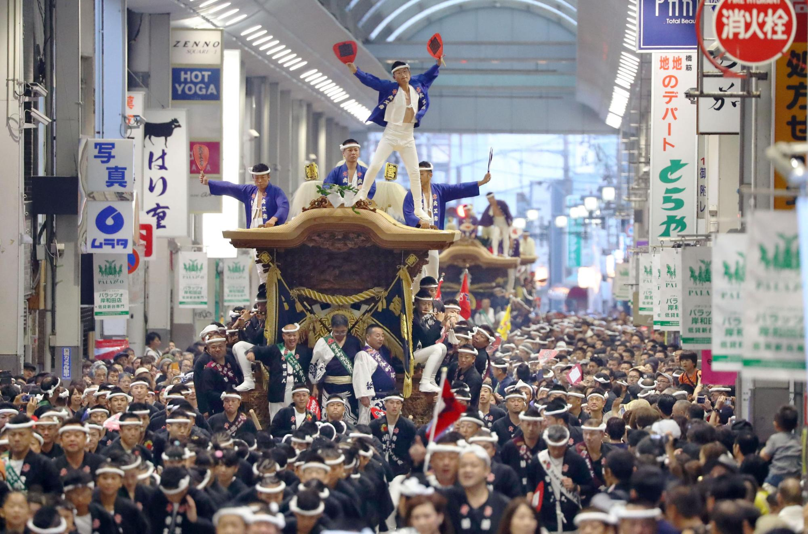

Japanese love to find a reason to celebrate and through Japan's long history, there are many reasons for a good fesitval.
While there are thousands of matsuris, or festivals, that go on throughout the year, the following are some that are considered the best.
Sakura Matsuri
Perhaps Japan's most famous festival and an enduring image of the country, the Sakura MAtsuri celebrates the limited time of the cherry blossom. Cherry trees across the country bloom in early March and only last for about a week. Travelers from around the world come to marvel at the delicate beauty on display. For one of the most popular places to view the sakura blossoms, head to the Imperial Park in Tokyo in the second week in March.
Sapporo Snow Festival

In the frigid winters of Sapporo, artists come from all over the world to create masterpieces from ice and snow. Splashed with colorful lights, the winter festival adds warmth to a cold winter. Hosted in Sapporos central square, the festival lasts from November through February.
Danjiri Matsuri

Danjiri Matsuri is probably one of the more obscure yet exciting festivals to join. The festival centers around the pulling of temple carts through the city in a timed race. The temple carts, usually weighing in at several tons and pulled by around one hundred people, are representative of the neighbors in southern Osaka. The festival takes place in the end of September